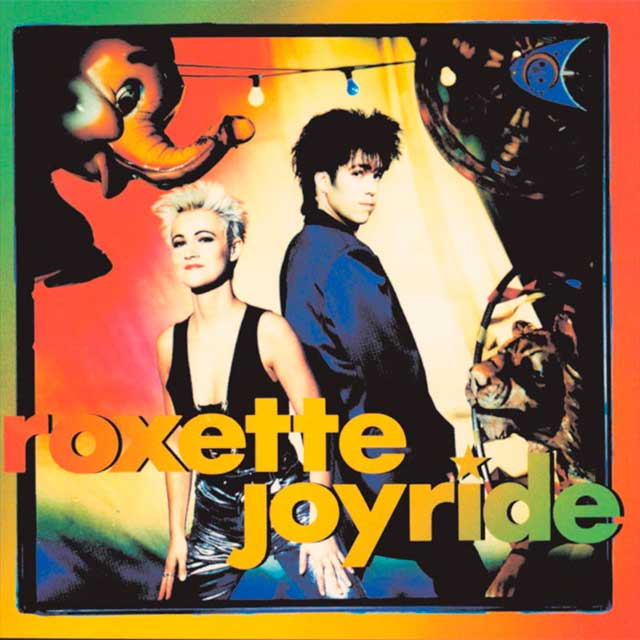

Joyride (en español: "Paseo divertido") es el tercer álbum de estudio de la banda sueca Roxette, lanzado el 28 de marzo de 1991 por el sello discográfico EMI. Es uno de los álbumes emblemáticos del pop de los años 90. El disco se situó como la placa discográfica más vendida del dúo sueco con 11 millones de copias, según reseña el sitio Best selling albums,1 superando a Look Sharp! que registro ventas por 10 millones de copias
PORTADA
Joyride - Lanzamiento original en vinilo de 12" en 1991; relanzamiento del 30 aniversario en vinilo de 12" en 2021
LISTA DE CACIONES
- Joyride
- Hotblooded
- Fading Like a Flower (Every Time You Leave)
- Knockin' on Every Door
- Spending My Time
- Watercolours in the Rain
- The Big L
- (Do You Get) Excited?
- Small Talk
- Physical Fascination
- Things Will Never Be the Same
- Perfect Day